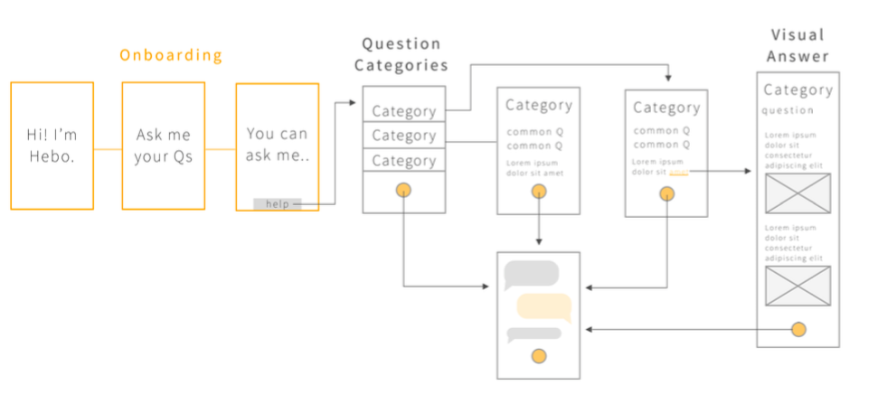

Hebo
A personal post-operative companion and assistant

PROJECT BACKGROUND
After undergoing Mohs surgery, patients often have questions and concerns about their post-operative treatments. Most of the post-operative instructions are given right after the surgery and most of the time they are rushing with adrenaline and at times slightly disoriented. Therefore, they cannot retain all the information that the nurses tell them at the time of the procedure. Therefore, patients require support from clinical staff over the phone or in the clinic to address common concerns. Moreover, staff members often have to dedicate significant portions of time to communication information already made available to patients.
Our team was tasked with developing a post-operative care assistant that could handle these concerns and act as a constant companion throughout a patient’s recovery. We conducted numerous stages of research and prototyping to finally create Hebo, an app- based chatbot that uses voice, text, and images to convey care information.
RESEARCH APPROACH
We started with a comprehensive literature review to not only understand the current post-operative care process, but also to gain knowledge on pain management and the relationship elderly people have with current technologies. Information from our literature review helped supplement our first-hand findings and filled in gaps on aspects we could not directly test. Next, we conducted a heuristic analysis, evaluating a prototypical app previously developed to guide patients through their post-operative care using Nielsen’s principles. To gain a more thorough understanding of what patients and clinical staff undergo, we performed numerous contextual inquiries at the clinics, observing surgery, lab work, patient guidance, and more. Our team shadowed patients, nurses, and doctors as they went about their tasks to identify current processes and breakdowns. As a part of our diary study, we provided each surgical patient within our study’s timeframe with a notebook to record their post-operative journey, which they were asked to fill out from the evening of their surgery until their one week follow-up appointment. We intended to discern what problems patients commonly face after surgery and what actions they take to address any concerns they have. Finally, we conducted interviews with patients, caretakers, hospital staff, and doctors to recognize the perspectives of each stakeholder and gather information from all relevant parties.
KEY INSIGHTS
- 1. Doctors think that they are providing patients with all of the information they need, but this is not always the case.
- 2. Patients look for greater reassurance and personalized care from the post- operative process.
- 3. Nurses feel that some post-operative calls are redundant.
- 4. The predominant demographic of skin cancer patients, the elderly population, calls for an emphasis on accessibility and simplicity.
BRAINSTORMING
From our research insights, we had multiple brainstorming sessions to come up with a list of solutions. From our list of solutions, we created storyboards and presented to the client. We worked with the client to narrow down our ideas to 2 possible solutions which was the chatbot and the interactive tutorial on post-operative care where we parallel prototyped. From there, we took the best features from each prototype to create Hebo, a chatbot with limited conversation topics designed to answer questions specific to the patient’s surgery experience.
FINAL DESIGNS
Our chatbot is designed to be a personal healthcare companion and assistant that answers any questions the patient may have about bleeding and wound care. We found in our research that patients need reassurance to questions that they may already know the answers to. Hebo helps to reassure patients by being available to answer any questions the patient may have at all times and thereby simultaneously reduces the call load of the nurses. In order to accomodate our limited time in the project, we narrowed the scope to questions that concern bleeding, wound care, and swelling on surgery sites on the neck and scalp. Based on conversations with nurses and looking at a few nurse call logs we estimate that although small this scope will address around 25% of the post-operative calls from patients within 48 hours of their surgery.

We performed more focused users testing with our high fidelity prototype. Our target audience included patients from the clinic, in addition to the nurses and other potential users who were above the age of 60. Participants were invited to spend some time interacting with Hebo while performing a think-aloud and then follow-up in a brief interview.
Our team has worked to create a proof of concept project that provides evidence that a personal health bot, Hebo, will help decrease the amount of patient calls. We believe that in order to successfully carry out the remainder of this project, our client will need to pursue work with future student consultant teams to focus on further refining Hebo, to expand the scope of the Hebo functionalities, and to create a feasible scalability plan that allows the introduction of Hebo to multiple different clinicians serving Mohs surgery patients.